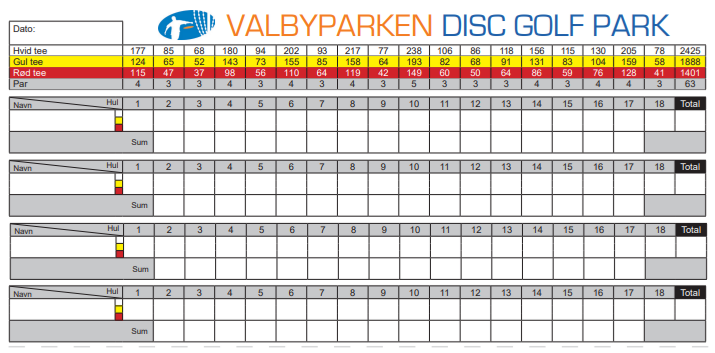

Banen
Velkommen
Valbyparkens Disc Golf Bane er anlagt af Københavns Frisbee Klub i 2004, og har haft mange forskellige layouts gennem tiden.
Det er i dag den mest spillede disc golf bane i verden med over 40.000 registrerede runder på disc golf app'en uDisc.
Banen har 18 huller der kan spilles i 3 forskellige sværhedsgrader (rød, gul og hvid tee) og har et samlet par på 63 kast.I 2021 fik banen anlagt teepads på alle gule og hvide tees, hvilket har forbedret spiloplevelsen markant.
Banen har de seneste par år været første stop på The European Pro Tour, hvor Europas bedste spillere konkurrerer.
Scorekort
Her ser du banens scorekort med angivelse af hullernes par, og distancer fra rød, gul og hvid tee.
 Download scorekort{kind=link}
uDisc er verdens førende app for disc golfere.
Her får du hjælp til både at finde rundt og holde styr på din score.
Over tid vil du opbygge personlig statistik for dine præstationer på banen, hvilket kan hjælpe dig med at gentænke, hvordan du spiller banens huller.
App'en mønstrer et interaktivt verdenskort med over 14.000 baner, som du kan gå på opdagelse i. Du kan træne dine putts, måle distancen på dine kast og meget mere.
Den første måned er gratis, og derefter vil prisen være lidt over 100 kr. for en sæson. Med alt hvad denne app har at tilbyde, vil du hurtigt opdage at det er penge godt givet ud.
download app her via: